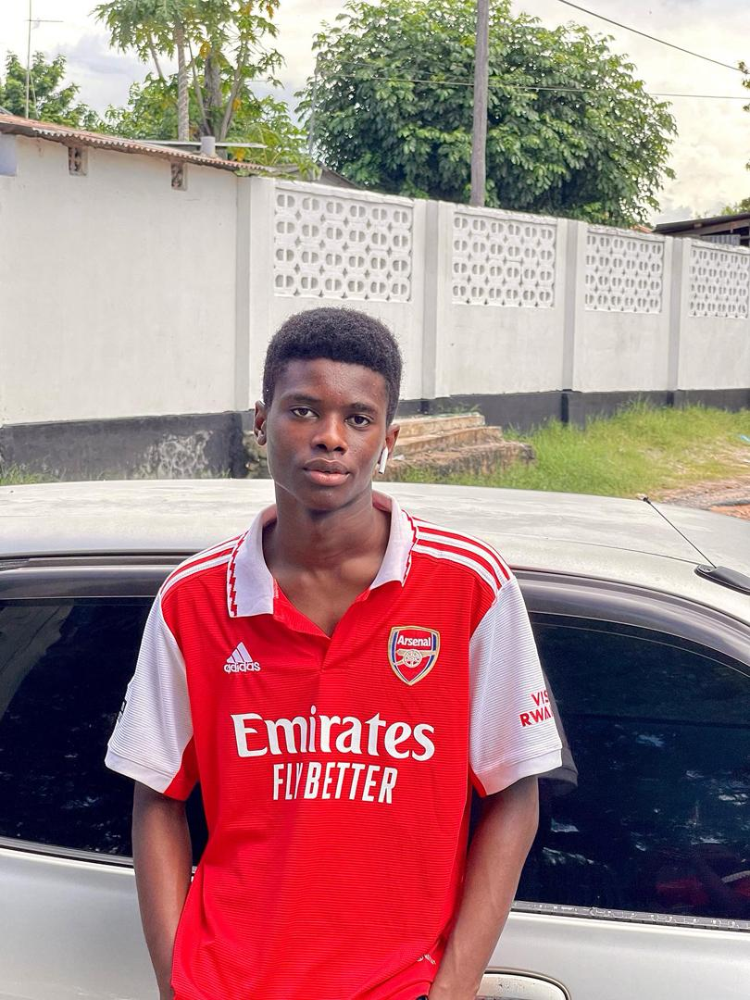

Dereck Sangiwa
About Me
I am a student at the University of Dar es Salaam pursuing a degree in Business Information Technology. I have a strong interest in business, entrepreneurship, and technology. I enjoy learning how systems work and applying that knowledge to real-world opportunities. I am currently building skills that will help me grow in both business and technology fields.
Skills
- Swimming
- Business Thinking
- Communication
- Problem Solving
Education
| Level | School | Year |
|---|---|---|
| Primary | VES | 2018 |
| Secondary | CBSS | 2022 |
| Advance | ISS | 2025 |
| University | University of Dar es Salaam | 2025/2026 |
Hobbies
Swimming is not only a physical activity for me but also a way to relax and improve my concentration. Reading helps me gain knowledge about business, technology and personal development. I also enjoy thinking about business opportunities and how they can grow into successful ventures in the future.
My Photos


← Back Home